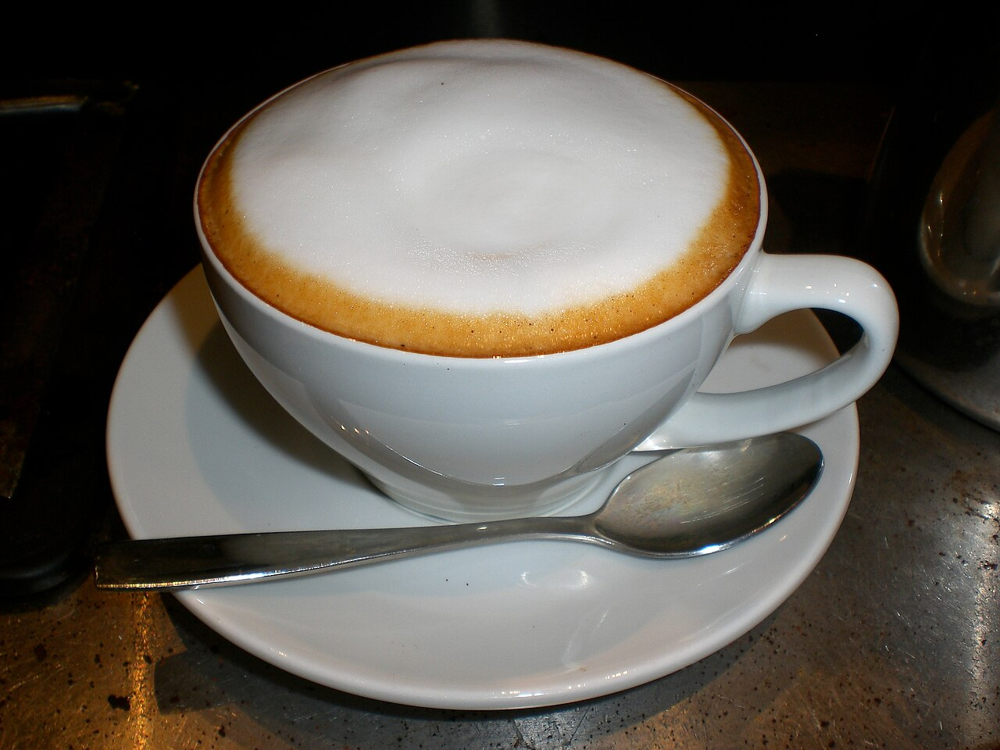
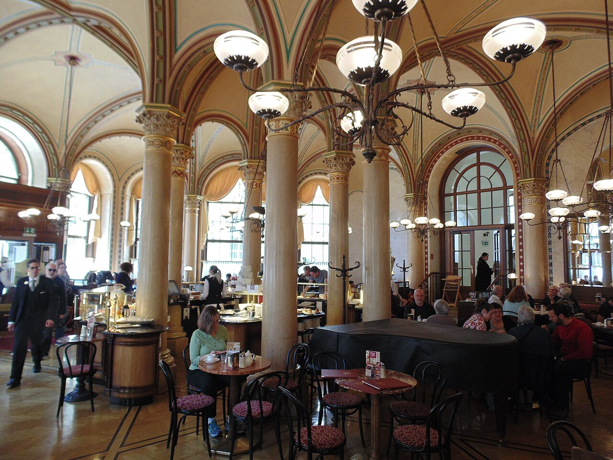
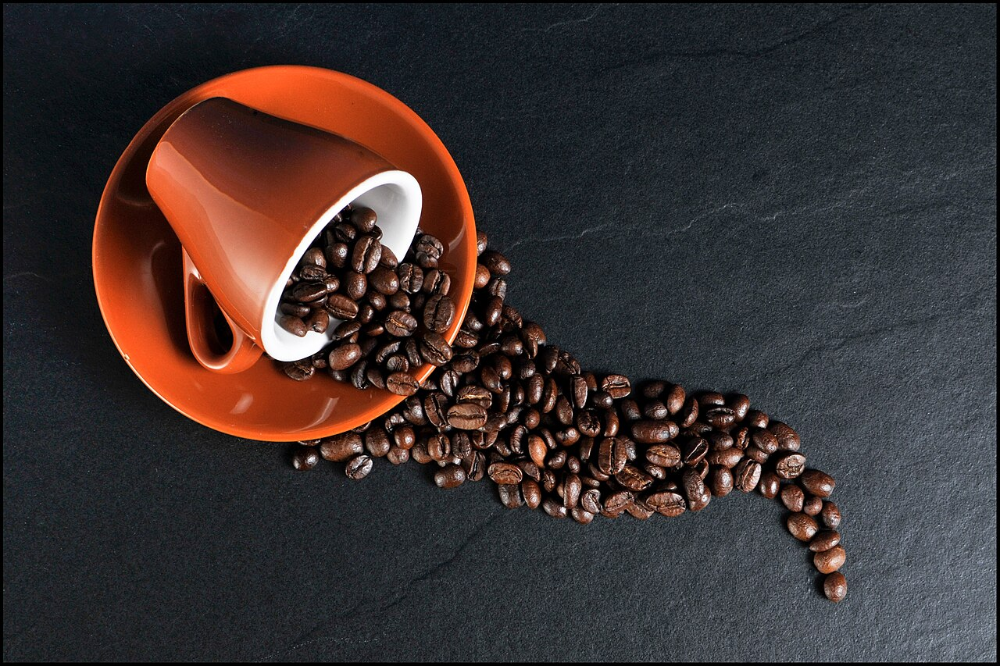

Знакомство начни здесь01
Карамельный мур
290 ₽Сливочный латте, солёная карамель и та самая нежная пенка.
300 мл · мягкий и сладкийС первого глотка. С тёплой чашки в ладонях. С маленькой паузы, которую ты наконец разрешил себе.

Наша история началась с мечты о маленькой кофейне: с большим окном, ароматом свежего кофе и ощущением, что тебе здесь рады.
Так появился «Кофейный котик» — место для неспешных разговоров, любимых книг и встреч без повода. Котик в названии — про уют. А кофе — наш способ им поделиться.
Устраивайся. Ты уже почти дома.

Маленькие поводы сделать обычный день немного лучше.
Начни день с любимого напитка. По будням с 08:00 до 11:00 он приятнее на 15%.
На один напиток из меню · понедельник–пятницаКаждую среду — скидка 20% на второй напиток. Повод увидеться уже есть.
На напиток меньшей стоимости в одном заказеПриходи со своей чистой многоразовой кружкой и получай скидку на напиток в неё.
Каждый день · кружка подходящего объёмаДемонстрационные предложения. В одном заказе действует одна акция; скидки не суммируются. За напитки по акции отметки по бонусной программе не начисляются.
У тёплых встреч есть приятное продолжение. Пять напитков — и капучино от нас.
Предъяви карту бариста до оплаты. За каждый напиток из меню по полной цене начисляется одна отметка. За подарочные и акционные напитки отметки не начисляются.
Классический капучино 250 мл. При получении подарка списываются пять отметок. Добавки к подарочному напитку оплачиваются отдельно.
Отметки не сгорают: собирай их в удобном темпе и предъявляй свою карту при следующем визите.
Демонстрационные правила бонусной программы.
Вдохновение для нашей учебной кофейни: мягкая пенка, разговоры за столиком и аромат любимых зёрен.
Капучино для спокойного начала дня или маленькой паузы между делами.
Фото: JazzbobrownИсточник ↗
Свет, столики и красивые детали, ради которых хочется задержаться.
Фото: O.MustafinИсточник ↗

Тёплый кофейный аромат, который собирает настроение в одну чашку.
Фото: ChristophИсточник ↗
Фотографии иллюстрируют концепцию учебного проекта. Интерьер на фото - Café Central в Вене. Авторы, источники и лицензии.